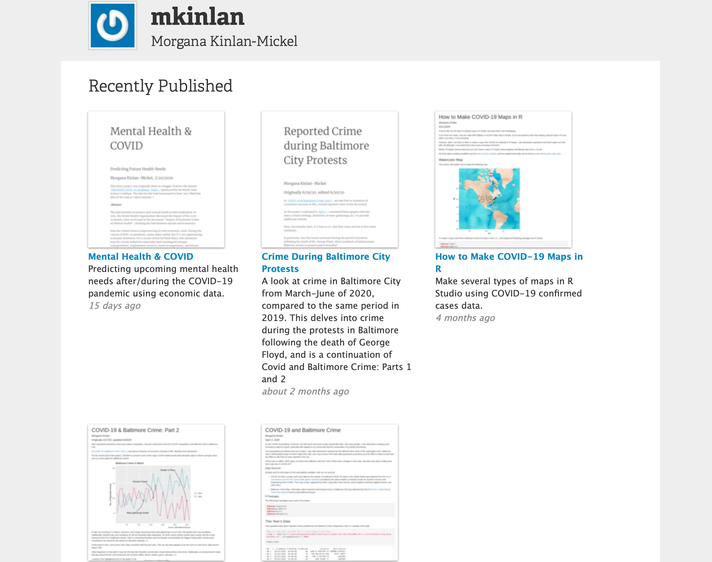

About Me
Hello! My name is Morgana Kinlan, and I became a data scientist because I like to solve puzzles and create things.
I’m particularly partial to visualizations in R, and I’m currently working on expanding into Tableau (let’s face it, the maps are awesome).
I earned my Master’s in Analytics in 2019, and I’ve been working with financial data for several years.
I believe that every business can benefit from data science, from mom and pop stores to global enterprises.
Data is everywhere in today’s world, and exploring and examining that data is crucial to understanding the problems that we face and
developing their solutions.
"A problem well-stated is a problem half-solved."
-John Dewey
Projects

R & RStudio:
R Shiny
NOTE: Any required .csv files for apps are publicly available in my Rpubs github repo".
Tableau
In the works!
Education
Graduate:
Degree: M.S. Analytics, Notre Dame of Maryland, August 2019
GPA 3.9
Coursework: Data Design & Management, Data Tools, Data Visualization, Project Management, Data Security, Data Mining & Warehousing, Applied Statistics, Data & Decision Making
Capstone Project: Examining Street Damage in Baltimore City:The Effects of Water, Traffic, and Tree Species
- Skills used include research, hypothesis testing, data gathering, data cleaning, Poisson regression, and data visualization
Undergraduate:
B.S. Neuroscience, King’s College, May 2008
Certifications:
ITIL v3 Certifications: Foundations, Continual Service Improvement, Service Transition, Operational Support and Analysis, Service Strategy